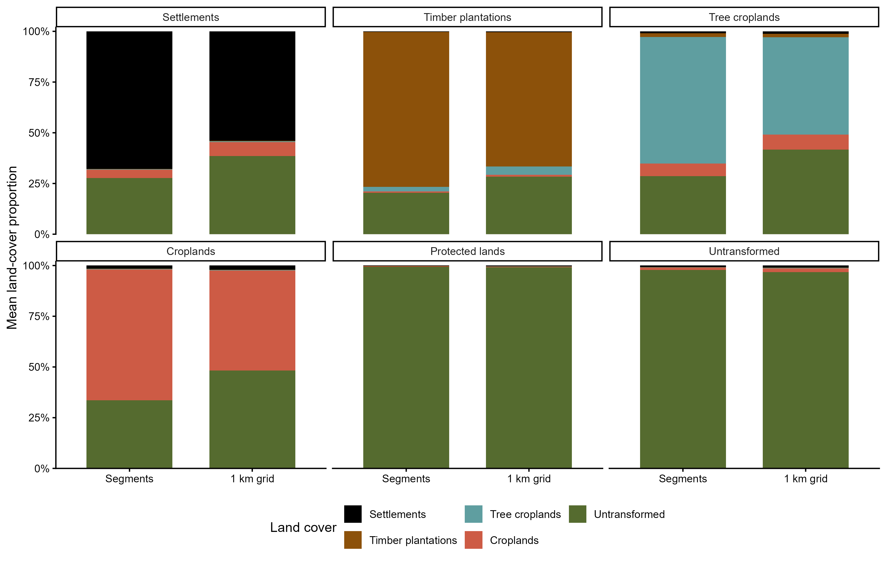
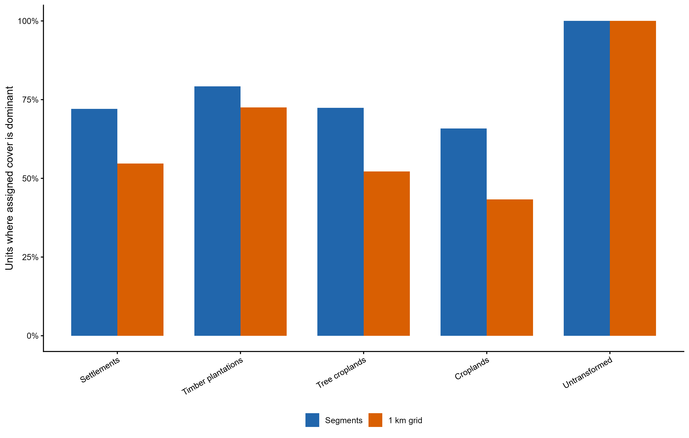
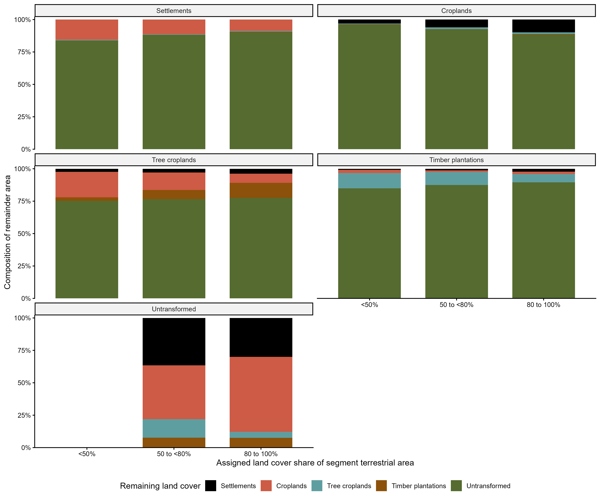

Segment land use and intensity allocation
Summary
We used the South African National Land Cover (SANLC) dataset to assign broad land use and estimate land use intensity because it provides a nationally consistent and high-resolution representation of land cover that was not available across sub-Saharan Africa for the original BII assessment. SANLC is already used by SANBI in the National Biodiversity Assessment and other national biodiversity monitoring applications, providing consistency with established South African biodiversity products. Its regular update cycle (approximately every four years) also means that the BII land use and intensity layers can be updated using the same underlying national dataset, supporting repeatable monitoring of changes through time.
The aim of this section of the workflow is to assign each segment one dominant BII land use class following an expert decision tree.
Input data
Script: https://code.earthengine.google.com/b24c2eb0480039c2c13c32a0e9cd7a53
The following spatial layers are used in GEE:
| Input | Description |
|---|---|
Segments_800m_SA |
National segmentation raster containing a unique integer identifier for every segment |
SANBI_PA_2025_BII |
Gazetted and managed terrestrial protected areas retained for BII |
| Pixel-area image | Pixel area in square metres, generated using ee.Image.pixelArea() |
1. Calculate land use proportions
For each segment, the mapped area of the following candidate classes is calculated:
- settlements;
- timber plantations;
- tree croplands;
- croplands;
- protected lands; and
- untransformed lands.
For each segment, the script sums the area (in square meters) of all pixels belonging to each class separately and for total segment area.
For land use class (c) in segment (s), proportional cover is:
\[ p_{c,s} = \frac{A_{c,s}}{A_s} \]
where:
- (Ac,s) is the area of class (c) in segment (s); and
- (As) is the total terrestrial area of segment (s).
2. Assign one BII land use class
A candidate class becomes eligible for assignment when it covers more than 20% of the segment.
The classes are evaluated in the following priority order:
- Settlements
- Timber plantations
- Tree croplands
- Croplands
- Protected lands
- Untransformed lands
Where multiple classes exceed 20%, the class with the highest priority is assigned. Therefore the decision tree logic is:
IF settlement proportion > 0.20 assign Settlement
ELSE IF timber proportion > 0.20 assign Timber plantation
ELSE IF tree-crop proportion > 0.20 assign Tree cropland
ELSE IF cropland proportion > 0.20 assign Cropland
ELSE IF protected proportion > 0.20 assign Protected land
ELSE assign Untransformed land
Example, if:
- settlement proportion = 0.25;
- cropland proportion = 0.30; and
- both exceed 0.20.
The segment is assigned to Settlements, because settlements have higher priority than croplands.
Examples
| Segment composition | Assigned class | Reason |
|---|---|---|
| 15% settlement, 30% cropland, 55% untransformed | Croplands | Settlement does not exceed 20%, but cropland does |
| 22% timber, 35% cropland, 43% untransformed | Timber plantations | Both exceed 20%, but timber has higher priority |
| 10% cropland, 25% protected, 65% untransformed | Protected lands | Protected cover exceeds 20% and no higher-priority class does |
| 10% settlement, 10% crop, 15% protected, 65% untransformed | Untransformed lands | No other class exceeds 20% |
| 25% settlement inside a protected area | Settlements | Transformed land is assigned before protected land |
Note, a higher-priority transformed land use can override the protected assignment.
The allocation logic is implemented in reverse order in GEE because later where() statements overwrite earlier assignments. In other words, “where” the condition is true, replace the current value with the specified class.
var assignedLandUse = ee.Image(BII_UNTRANSFORMED)
.where(
propProtected.gt(0.20),
BII_PROTECTED
)
.where(
propCropland.gt(0.20),
BII_CROPLAND
)
.where(
propTreeCrop.gt(0.20),
BII_TREE_CROP
)
.where(
propTimber.gt(0.20),
BII_TIMBER
)
.where(
propSettlement.gt(0.20),
BII_SETTLEMENT
)
.rename('bii_land_use');3. Protected area treatment
The SANBI_PA_Mar2025 data set was used to select Protected Areas (PAs) listed below. The selected PAs were dissolved in ArcGIS Pro prior to upload to GEE to avoid dealing with complex and pontially overlapping polygons in GEE.
The following terrestrial protected area types are currently included:
Nature Reserve;
Forest Nature Reserve;
National Park;
Forest Wilderness Area;
Special Nature Reserve; and
World Heritage Site
The following are excluded from the current protected allocation:
Protected Environment;
Mountain Catchment Area;
Ramsar Site;
UNESCO Biosphere Reserve;
Botanical Garden; and
Marine protected areas.
A segment is assigned to Protected lands only when:
- protected area cover exceeds 20%; and
- no higher-priority transformed class exceeds 20%.
Protected intensity is provisionally fixed at 0. This represents the low-intensity endpoint of land use, not a direct measurement of protected area effectiveness. The assumption should be reviewed using biome-specific information where available.
Output
The final spatial product is a two-band raster:
bii_land_use
bii_land_use_intensityBand 1: bii_land_use
An integer value from 1 to 6 representing the dominant BII land use class assigned to each segment.
Band 2: bii_land_use_intensity
A continuous value from 0 to 1 representing segment-level land use intensity. For non-natural classes, this combines the within-class intensity of the assigned land use with the proportion of the terrestrial segment covered by all non-natural land uses. See “land use intensity” for more detail.
The two bands must be interpreted together. The intensity value is conditional on the broad land use assigned to the segment, and the intensity of Untransformed lands will be refined separately using ecological pressure and condition information.
Segment vs. grid broad land cover composition
We examined land cover composition in a northern Limpopo case study in a mixed use landscape to assess whether segments capture more coherent land use units than a regular 1 × 1 km grid. For each unit, we calculated the proportion of mapped terrestrial area occupied by each broad NLC category and applied the same >20% allocation thresholds and priority rules. Composition was then averaged within each assigned class, giving each unit equal weight.
Segments contained higher mean proportions of their assigned land cover (FIg. 1) than grid cells for settlements, timber plantations, tree croplands and croplands. Both approaches produced predominantly untransformed cover within Protected and Untransformed units. These preliminary results suggest that segments better separate broad land uses in this landscape.

The assigned land use class also matched the dominant underlying land cover more frequently in segments than in grid cells, particularly for croplands, tree croplands and settlements. This indicates that segment-based labels more often represent the largest land cover component within an assessment unit. The comparison measures agreement between allocation and mapped composition, rather than classification accuracy.

We further explored what typically co-occurs with each broad land use class within each segments (Fig. 3).In this case study, untransformed land accounts for approximately 75–100% of the pooled remainder within segments assigned to settlements, croplands, tree croplands and timber plantations. The remainder therefore mainly reflects mixtures of transformed and untransformed cover, although other agricultural uses also contribute, particularly within tree cropland segments. Conversely, the transformed remainder within untransformed-assigned segments consists mainly of croplands and settlements. These percentages describe the remainder rather than the whole segment, and highlight why the condition of untransformed cover may matter when estimating intensity across mixed landscapes.
